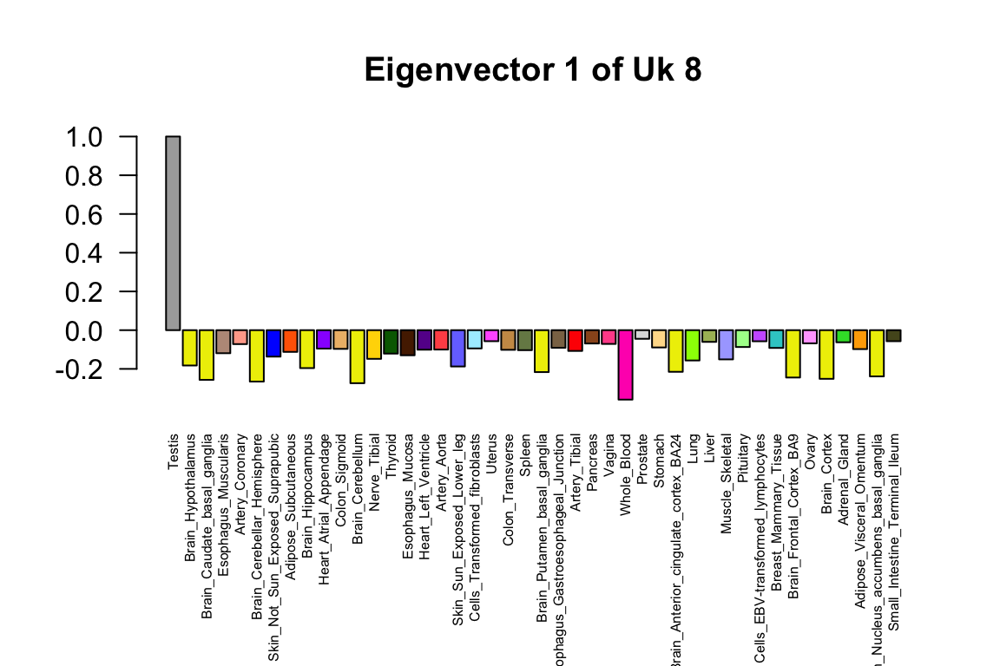

Correlation patterns from eighth covariance component
Sarah Urbut, Gao Wang, Peter Carbonetto and Matthew Stephens
Last updated: 2018-06-05
workflowr checks: (Click a bullet for more information)-
✔ R Markdown file: up-to-date
Great! Since the R Markdown file has been committed to the Git repository, you know the exact version of the code that produced these results.
-
✔ Environment: empty
Great job! The global environment was empty. Objects defined in the global environment can affect the analysis in your R Markdown file in unknown ways. For reproduciblity it’s best to always run the code in an empty environment.
-
✔ Seed:
set.seed(1)The command
set.seed(1)was run prior to running the code in the R Markdown file. Setting a seed ensures that any results that rely on randomness, e.g. subsampling or permutations, are reproducible. -
✔ Session information: recorded
Great job! Recording the operating system, R version, and package versions is critical for reproducibility.
-
Great! You are using Git for version control. Tracking code development and connecting the code version to the results is critical for reproducibility. The version displayed above was the version of the Git repository at the time these results were generated.✔ Repository version: a9bca8b
Note that you need to be careful to ensure that all relevant files for the analysis have been committed to Git prior to generating the results (you can usewflow_publishorwflow_git_commit). workflowr only checks the R Markdown file, but you know if there are other scripts or data files that it depends on. Below is the status of the Git repository when the results were generated:
Note that any generated files, e.g. HTML, png, CSS, etc., are not included in this status report because it is ok for generated content to have uncommitted changes.Ignored files: Ignored: .sos/ Ignored: data/.sos/ Ignored: output/MatrixEQTLSumStats.Portable.Z.coved.K3.P3.lite.single.expanded.V1.loglik.rds Ignored: workflows/.ipynb_checkpoints/ Ignored: workflows/.sos/ Untracked files: Untracked: TODO.txt Untracked: analysis/files.txt Untracked: fastqtl_to_mash_output/ Untracked: gtex6_workflow_output/ Unstaged changes: Deleted: analysis/Fig.Uk2.Rmd Deleted: analysis/Fig.Uk3.Rmd Deleted: analysis/Fig.Uk4.Rmd Deleted: analysis/Fig.Uk5.Rmd Deleted: analysis/Fig.Uk8.Rmd Modified: analysis/gtex.Rmd
Expand here to see past versions:
| File | Version | Author | Date | Message |
|---|---|---|---|---|
| Rmd | 69cd08c | Peter Carbonetto | 2018-06-05 | wflow_publish(“Uk8.Rmd”) |
Here we plot the correlation matrix for the eighth covariance component, which captures testis-specific effects.
Set up environment
First, we load a couple plotting packages used in the code chunks below.
library(lattice)
library(colorRamps)Load data and mash results
In the next code chunk, we load some GTEx summary statistics, as well as some of the results generated from the mash analysis of the GTEx data.
covmat <- readRDS(paste("../output/MatrixEQTLSumStats.Portable.Z.coved.K3.P3",
"lite.single.expanded.rds",sep = "."))
pis <- readRDS(paste("../output/MatrixEQTLSumStats.Portable.Z.coved.K3.P3",
"lite.single.expanded.V1.pihat.rds",sep = "."))$pihat
z.stat <- readRDS("../data/MatrixEQTLSumStats.Portable.Z.rds")$test.z
pi.mat <- matrix(pis[-length(pis)],ncol = 54,nrow = 22,byrow = TRUE)
names <- colnames(z.stat)Next, we load the tissue indices:
h <- read.table("../data/uk8rowIndices.txt")[,1]For the plots of the eigenvectors, we load the colours that are conventionally used to represent the tissues in plots.
missing.tissues <- c(7,8,19,20,24,25,31,34,37)
color.gtex <- read.table("../data/GTExColors.txt",sep = '\t',
comment.char = '')[-missing.tissues,]Compute the correlations from the \(k=8\) covariance matrix.
k <- 8
x <- cov2cor(covmat[[k]])
x[x<0] <- 0
colnames(x) <- names
rownames(x) <- namesGenerate heatmap of Uk8 covariance matrix
Now we produce the heatmap showing the full covariance matrix.
clrs <- colorRampPalette(rev(c("#D73027","#FC8D59","#FEE090","#FFFFBF",
"#E0F3F8","#91BFDB","#4575B4")))(64)
lat=x[rev(h),rev(h)]
lat[lower.tri(lat)] <- NA
n=nrow(lat)
print(levelplot(lat[n:1,],col.regions = clrs,xlab = "",ylab = "",
colorkey = TRUE))
Plot eigenvector capturing the predominant pattern
The top eigenvector captures the predominant pattern in the Uk8 covariance matrix.
col = as.character(color.gtex[,2])
k=8
g=1
v=svd(covmat[[k]])$v[h,]
rownames(v)=colnames(v)=names[h]
par(mar=c(8,4.1,4.1,2.1))
barplot(v[,g]/v[which.max(abs(v[,g])),g],las=2,
main=paste("Eigenvector",g,"of Uk",k),
cex.names = 0.5,col=col[h],names=names[h])
Session information
sessionInfo()
# R version 3.4.3 (2017-11-30)
# Platform: x86_64-apple-darwin15.6.0 (64-bit)
# Running under: macOS High Sierra 10.13.4
#
# Matrix products: default
# BLAS: /Library/Frameworks/R.framework/Versions/3.4/Resources/lib/libRblas.0.dylib
# LAPACK: /Library/Frameworks/R.framework/Versions/3.4/Resources/lib/libRlapack.dylib
#
# locale:
# [1] en_US.UTF-8/en_US.UTF-8/en_US.UTF-8/C/en_US.UTF-8/en_US.UTF-8
#
# attached base packages:
# [1] stats graphics grDevices utils datasets methods base
#
# other attached packages:
# [1] colorRamps_2.3 lattice_0.20-35
#
# loaded via a namespace (and not attached):
# [1] workflowr_1.0.1.9000 Rcpp_0.12.16 digest_0.6.15
# [4] rprojroot_1.3-2 R.methodsS3_1.7.1 grid_3.4.3
# [7] backports_1.1.2 git2r_0.21.0 magrittr_1.5
# [10] evaluate_0.10.1 stringi_1.1.7 whisker_0.3-2
# [13] R.oo_1.21.0 R.utils_2.6.0 rmarkdown_1.9
# [16] tools_3.4.3 stringr_1.3.0 yaml_2.1.18
# [19] compiler_3.4.3 htmltools_0.3.6 knitr_1.20This reproducible R Markdown analysis was created with workflowr 1.0.1.9000